Event Gallery
Moments captured from our live events, jam sessions, and collective gatherings.
Day of the Dead Vape Loft Street Jam
November 1st, 2025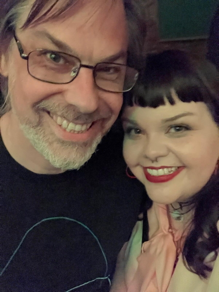
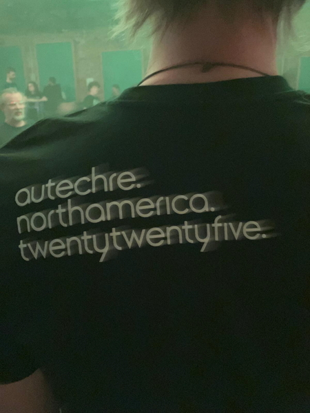
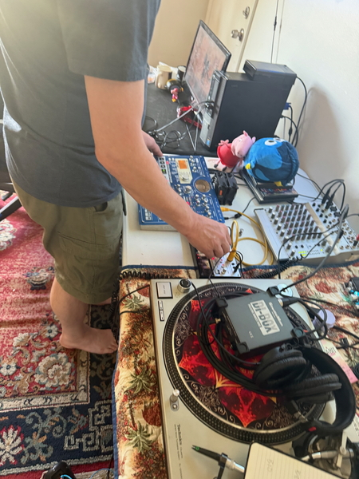
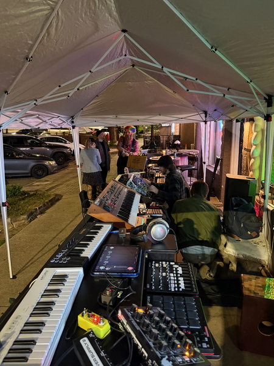
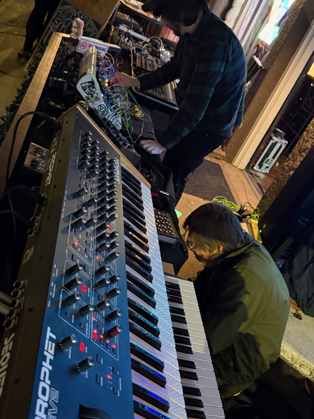
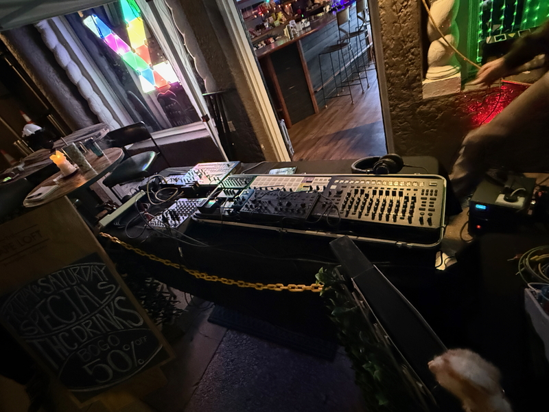
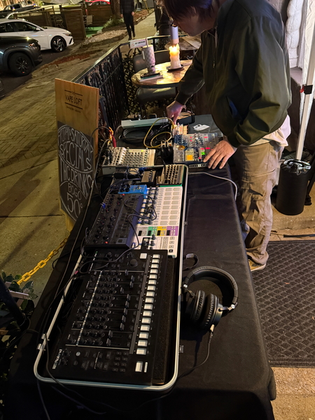
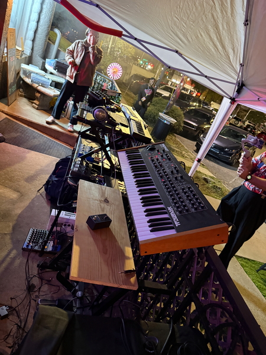
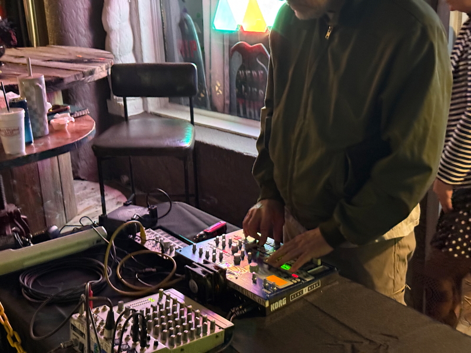
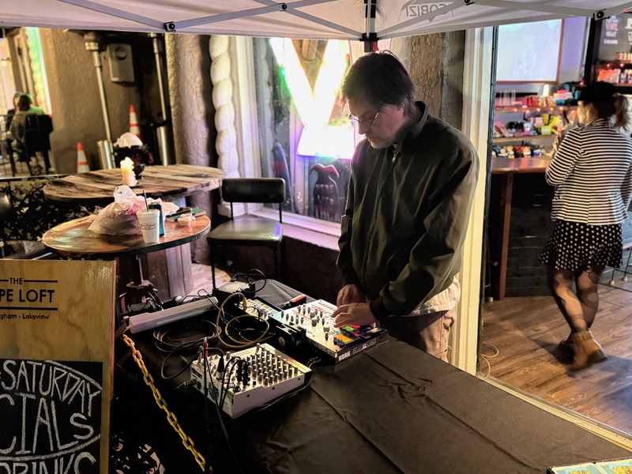
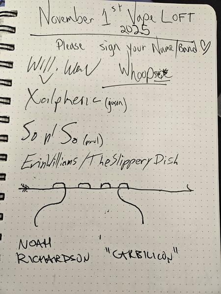
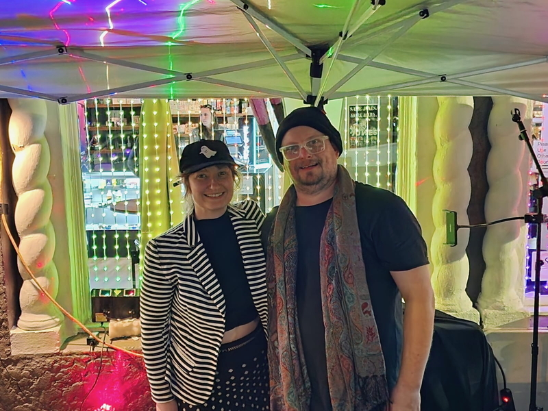
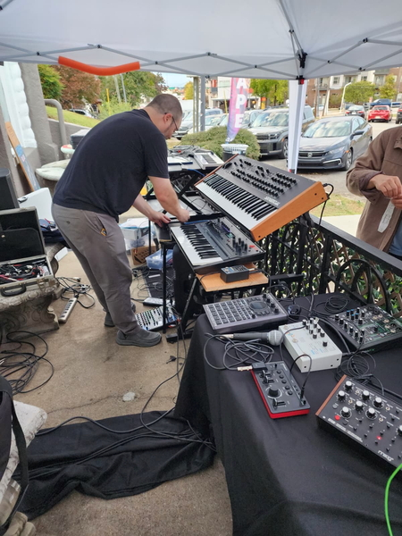
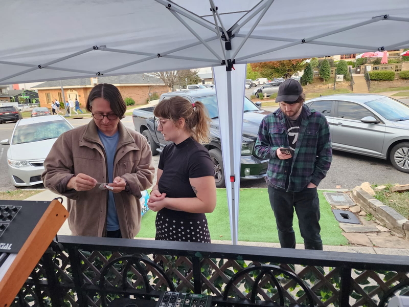
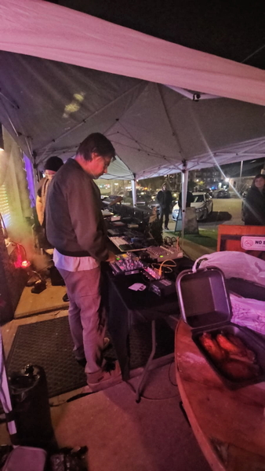
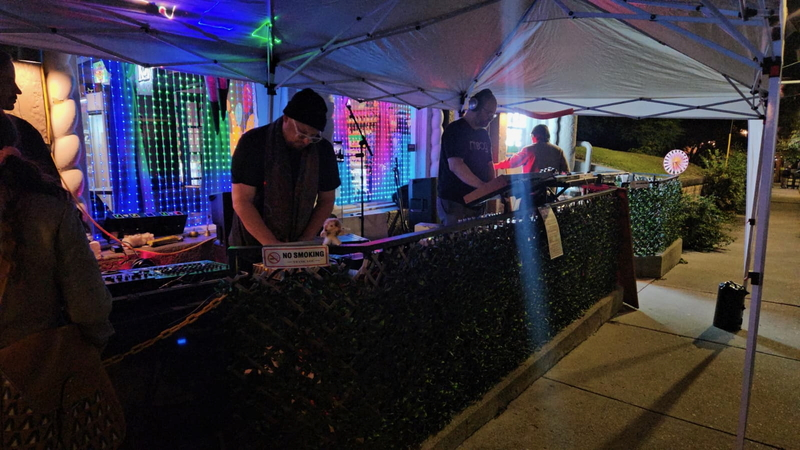
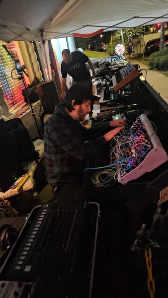
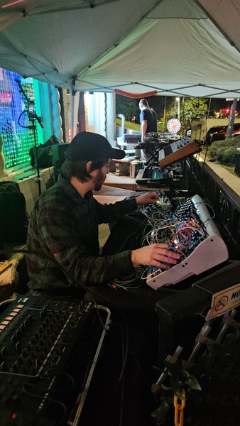
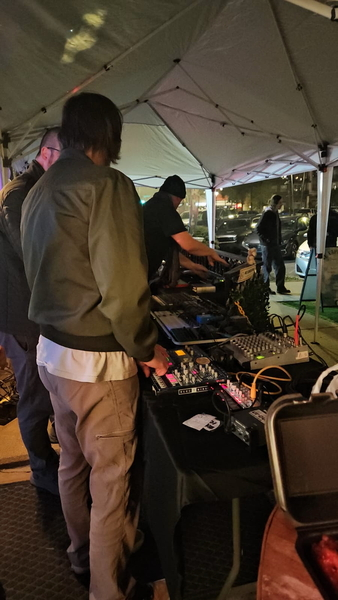
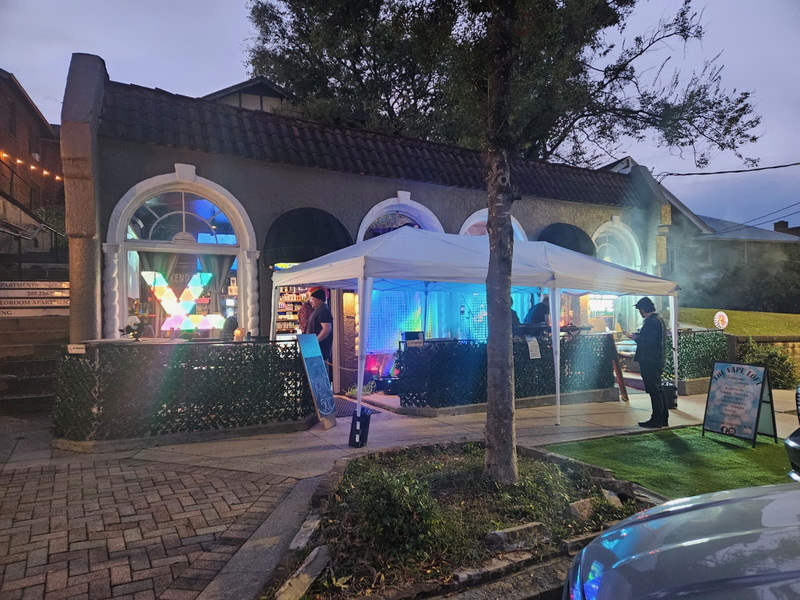
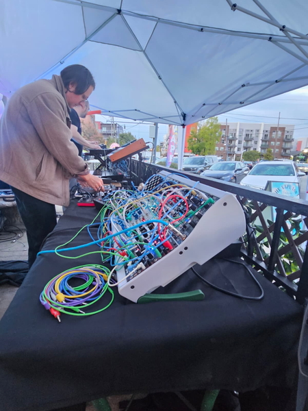
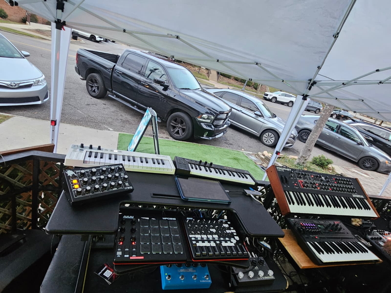
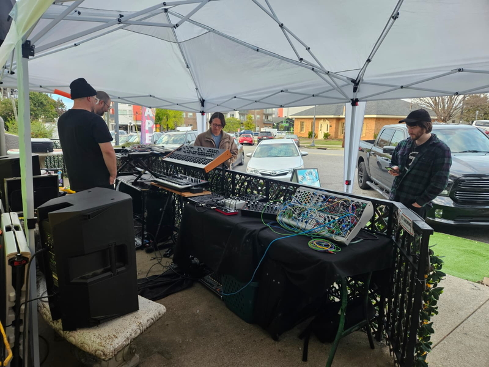
A full day and night of modular synthesis, live electronic improvisation, and collaborative jamming at Vape Loft in Lakeview. Artists including Will, Whoopsie, Xalpheric, So So, Erin Williams/The Slippery Dish, Noah Richardson, and more brought their hardware to the street for an unforgettable Day of the Dead celebration. Featuring Prophet synths, modular rigs, drum machines, and endless patch cables under colorful LED-lit tents.
Collective Members
The artists and collaborators making it all happen.
Gone
Folktronic Ambient
Josh Davis creates immersive soundscapes blending folk sensibilities with electronic textures and ambient atmospheres.
Future Primitives
Experimental Rock
Live performance ensemble delivering raw, visceral sonic experiences. Featured performing "Black Iron Prison" on Little Room In Florida.
Lower Hybrid
Electronic Experimental
Shane and Kaleb Wynn - Brothers crafting atmospheric electronic soundscapes with experimental production. 34 videos available!
The Slippery Dish
Experimental Noise • Event Curator
Erin Aine - Non-binary noise artist and curator of Noise Night at East Village Arts Center. Creates immersive interactive performances and documents the Birmingham experimental scene. 41 videos available!
Carbilicon
Psytrance • Techno • Goa Trance
Noah Richardson - Psytrance and techno producer, Korg hardware enthusiast, and vinyl DJ specializing in classic Goa trance. Known for hypnotic live performances and deep hardware explorations. 170+ videos available!
Joseph Deese / Hamrock Records
Mental Health Music • Instrumental
Joseph Deese - Birmingham producer creating instrumental music focused on mental wellness and relaxation. Prolific creator with a digital recording studio and a mission to support mental health through sound. 955+ tracks available!